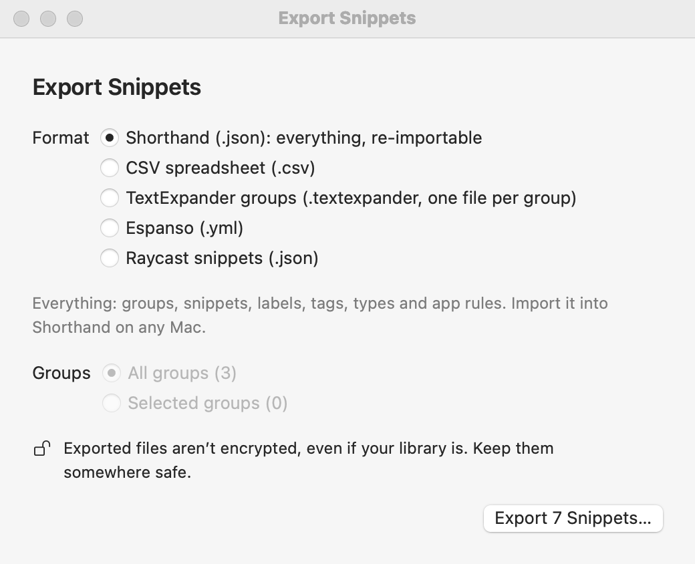

Exporting Your Snippets
Your snippets are yours. Export them any time: to keep a copy, to move to another Mac, or to take them to another app.
To export
- Choose File ▸ Export Snippets… (⇧⌘E).
- Pick a format (below).
- Choose All groups, or select some groups in the sidebar first and choose Selected groups.
- Click Export … Snippets… and choose where to save. Shorthand shows the file in the Finder and says what it exported.

Formats
| Format | What you get | Good for |
|---|---|---|
Shorthand (.json) | Everything: groups, snippets, labels, tags, snippet types, and app rules. | A complete copy, or moving to another Mac. Import it with File ▸ Import Snippets… |
CSV (.csv) | One row per snippet: abbreviation, content, label, group, type, and tags. | Opening in Numbers or Excel, and importing into most other text expanders. |
TextExpander (.textexpander) | A folder with one group file per group. | TextExpander, and apps that import TextExpander files. |
Espanso (.yml) | An Espanso match file. | Moving to Espanso. Put the file in Espanso’s match folder. |
Raycast (.json) | Raycast’s snippet import format. | Raycast’s Import Snippets command. |
What happens to snippet codes
- Shorthand, CSV, and TextExpander keep your snippets exactly as they are, codes included. TextExpander uses the same codes.
- Espanso and Raycast get their own versions of the clipboard (
%clipboard) and cursor (%|) codes. Other codes, such as fill-ins, dates, and keys, are kept as text, and Shorthand tells you how many. Script snippets and snippets without an abbreviation are left out, because those apps can’t use them.
Exports aren’t encrypted, even if your library is (Security & Encryption). Anyone who opens the file can read your snippets, so keep exports somewhere safe and delete copies you don’t need.
Right-clicking one group and choosing Export Group… still works too: it saves that group as a .textexpander file.